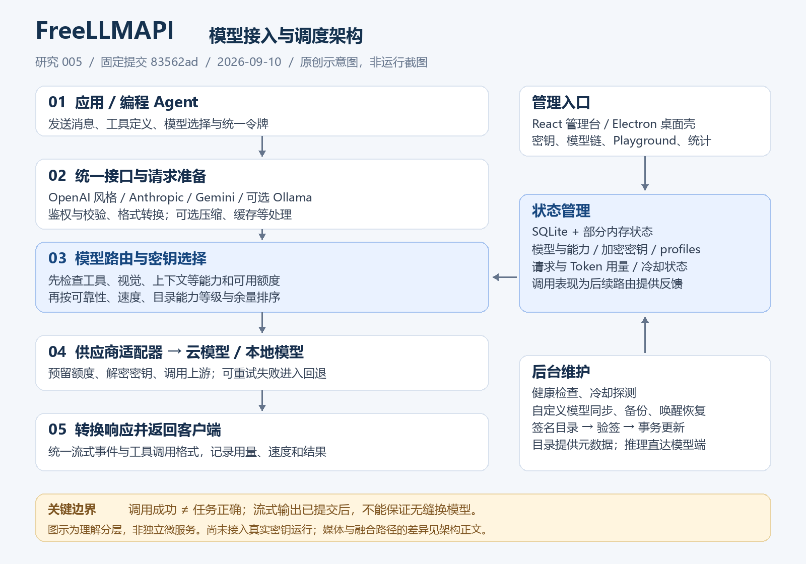

接口适配层
把不同消息、工具参数和流式事件，转换为可接入的格式。
我们的理解 / 模型网关
对外统一模型接口，对内选路、适配并管理额度和失败。路由决定调用谁，适配处理怎么调用。
核心交互引导图

沿用讨论中的核心交互图，非实际运行轨迹。有效流式输出已提交后，不能保证无缝换模型。
01 / 核心交互
切换场景查看机制。以下为固定教学模拟，A、B 是虚构候选，没有实际模型调用。
FreeLLMAPI / 统一模型接口
鉴权、输入校验
请求格式适配
能力、额度、健康状态
优先级或动态评分
转换上游协议
发送请求
返回应用网关转换返回格式，同时记录额度与调用表现。
02 / 架构与边界
把不同消息、工具参数和流式事件，转换为可接入的格式。
检查能力与额度，选择路线；在预算内进行冷却和失败回退。
保存模型、密钥、用量和表现，后台维护健康状态与模型目录。
免费额度会变化，换模型可能改变能力。流式内容已提交后，不能保证无缝切换；云模型调用仍会离开本机。

原创说明图，非上游截图或实际运行轨迹。
03 / 同类产品
依据官方文档，比较日期 2026-09-10。开源、托管和企业功能分别看待；没有进行统一性能实测。
| 产品 | 主要目标 | 路由与管理机制 | 部署与使用侧重点 |
|---|---|---|---|
| FreeLLMAPI | 利用个人模型资源与免费额度 | 能力筛选、动态评分、额度跟踪、冷却和失败回退 | 自托管；个人实验优先，单用户设计 |
| LiteLLM | 通用模型接入与团队共享网关 | 多部署负载均衡、限流感知、延迟 / 成本策略、虚拟密钥与预算 | 可自托管；需要管理配置、运行状态和依赖；部分企业治理另分版本 |
| New API | 模型渠道、用户配额与费用管理 | 渠道加权选择、失败重试、用户与令牌分组、模型限制及费用核算 | 可自托管；重点是渠道和使用者的管理 |
| Portkey | 网关策略与应用运行管理 | 条件路由、负载均衡、可组合回退、缓存与观察能力 | 有开源网关、托管与企业部署；不能将商业管理平台等同于开源包 |
| Bifrost | 注重性能和治理的模型网关 | 虚拟密钥规则、加权路由与回退；企业版提供实时表现驱动的自适应均衡 | 开源网关与企业功能分别核对；性能优势需在我们的负载上验证 |
| OpenRouter | 托管模型聚合与调用 | 同模型供应商选择、供应商回退、跨模型回退，支持自带供应商密钥 | 直接使用托管入口，减少自建网关工作；依赖平台规则与可用路线 |
| Cloudflare AI Gateway | 云端模型调用与路由管理 | 可视化 / JSON 条件流程、预算与限流节点、流量分配、回退和版本管理 | 托管；可自带密钥，也有统一账单路径，凭证选择有具体规则 |
供应商还能调用多少，与某个用户允许花多少，是两本不同的账。
请求成功、速度快、费用低，都需要与任务正确率分别衡量。
自己维护网关换取控制权；使用聚合服务减少部署工作，也引入平台依赖。
04 / 对我们的意义
FreeLLMAPI 补充模型接入与调度；LongHorizon-Harness 关注编排与验收，执行 Agent 负责实际工具操作。它们可以互补，但尚未完成集成验证。
如果以后开发网关，以 LiteLLM 学整体结构、FreeLLMAPI 学额度与容错，其他产品按具体问题借鉴。第一版先做好统一入口、少量供应商、明确选路、额度检查、有界回退和调用记录。
参考所有产品来建立视野，不追求一次补齐所有功能。用任务通过率、重试、耗时、调用费用与人工返工验收收益。阅读开发取舍与第一版范围 →
05 / 研究资料